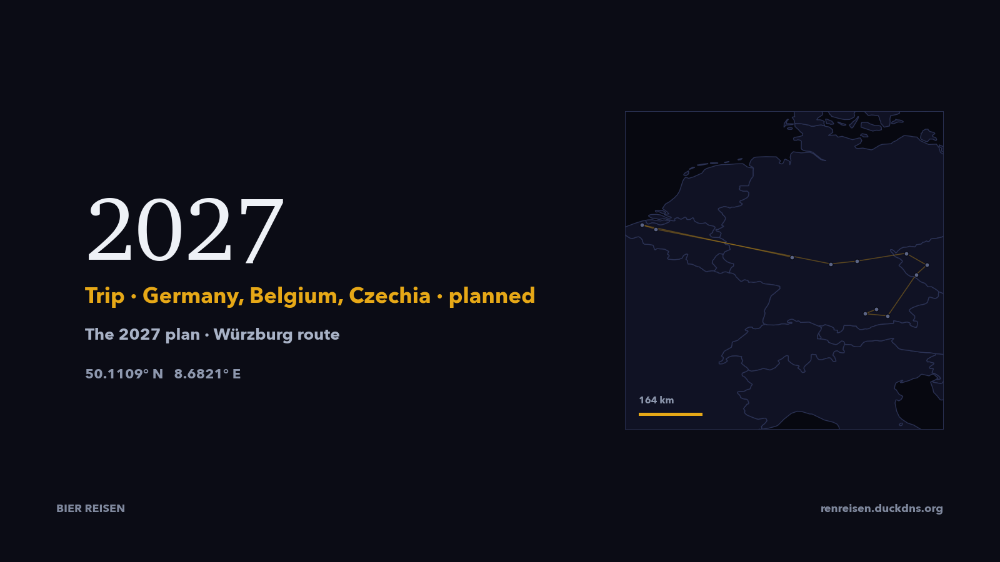
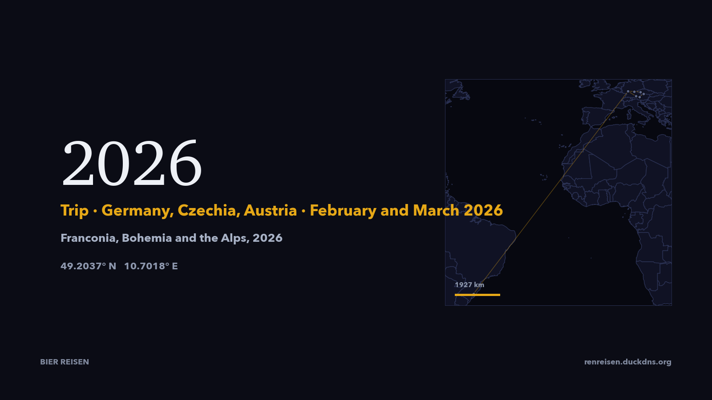
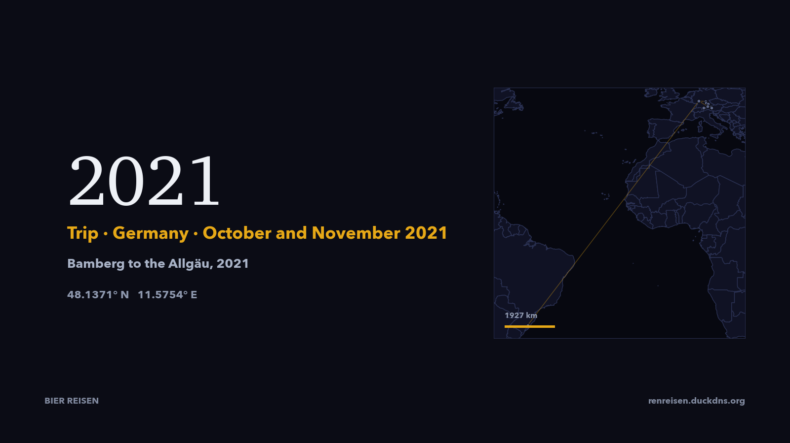
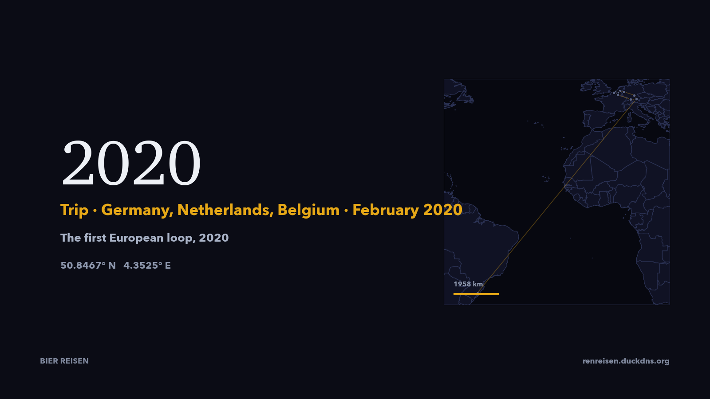
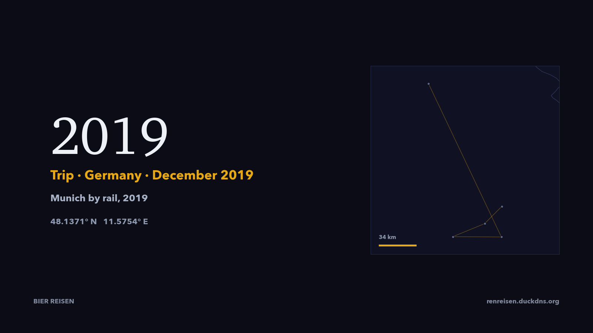
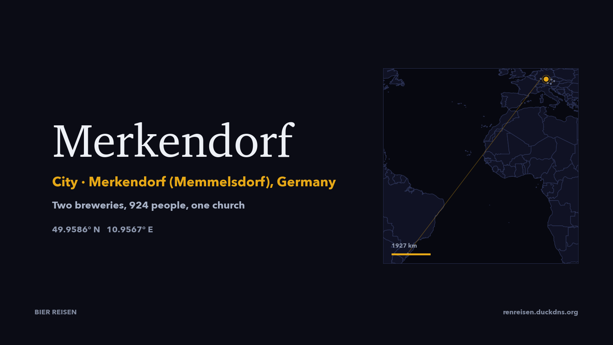
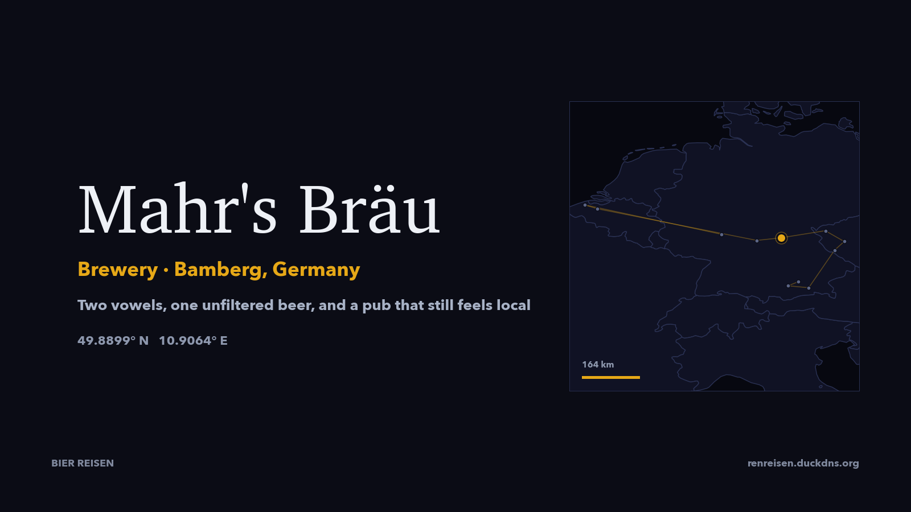
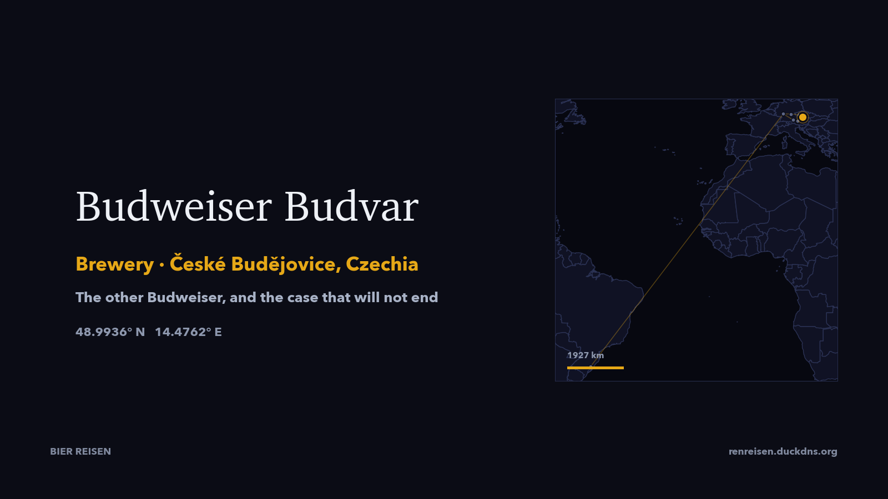
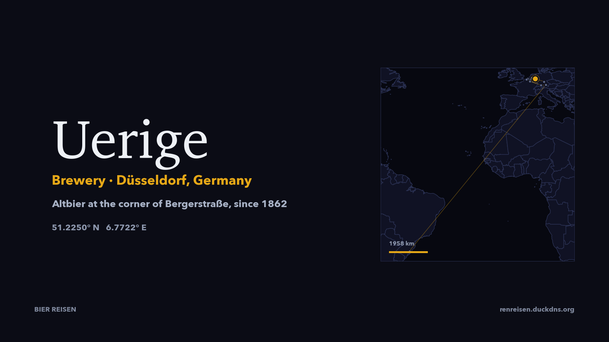

Viagem · Alemanha, Bélgica, Tchéquia · planejada
A viagem para a qual este arquivo vem sendo construído: quinze dias a partir de Frankfurt, duas noites em Bruges e uma em Gante, o longo dia para o…

Viagem · Alemanha, Tchéquia, Áustria · fevereiro e março 2026
A viagem de 2024 com os tempos certos: três noites em Merkendorf sobre a Brauerei Wagner, duas com a Budvar, três sob o Watzmann com Salzburgo do…
Viagem · Alemanha, Tchéquia, Itália · novembro 2024
Dezesseis dias a partir de 20 de novembro de 2024: três noites sobre uma cervejaria francônia em Memmelsdorf, duas em Plzeň, uma com a Budvar, duas…

Viagem · Alemanha · outubro e novembro 2021
Dezoito dias desde o fim de outubro de 2021, mudando de cama a cada noite ou duas: Bamberg, Nuremberg, um hotel na rocha em Essing, as montanhas…

Viagem · Alemanha, Países Baixos, Bélgica · fevereiro 2020
Dezessete dias em fevereiro de 2020, dez camas e um circuito que começou como lista de cervejarias e terminou como jeito de viajar: Munique, Bamberg…

Viagem · Alemanha · dezembro 2019
A primeira destas viagens, e a única sem carro: nove noites num único hotel em Munique, em dezembro de 2019, com idas e voltas de um dia a um…

Cidade · Tchéquia
Kout na Šumavě é um vilarejo de cerca de 1.100 habitantes nas colinas do Chodsko, sete quilômetros de Domažlice, com uma cervejaria que já fechou…

Cidade · Baviera, Alemanha
Würzburg é uma cidade de vinho, e as vinhas começam dentro do perímetro urbano. Também produziu cerveja, e muito, por séculos: a Hofbräu foi fundada…

Cidade · Merkendorf (Memmelsdorf), Alemanha
Merkendorf é um vilarejo de 924 habitantes com duas cervejarias, o que não é extraordinário na Alta Francônia e é o único motivo para ir até lá…

Cidade · Tchéquia
České Budějovice é a capital da Boêmia do Sul, traçada em torno de uma praça enorme em 1265, no encontro do Vltava com o Malše. Tem bondes e uma…

Cidade · Memmelsdorf, Alemanha
Memmelsdorf começa onde termina a borda leste de Bamberg: um vilarejo de 8.700 habitantes com igreja, um palácio de príncipes-bispos e uma…

Cidade · Tchéquia
Plzeň é uma cidade operária de cerca de 188 mil habitantes que mudou o que o mundo bebe. Cerveja é feita aqui desde a fundação da cidade, em 1295…

Cidade · Baviera, Alemanha
Berchtesgaden é uma vila de mercado numa bacia de montanhas, com o Watzmann acima dos telhados e o Königssee a vinte minutos de estrada. Produz a…

Cidade · Baviera, Alemanha
Nuremberg cavou seus porões de cerveja antes de construir a maioria das igrejas. A partir de 1380, o arenito sob a cidade velha foi escavado para…

Cidade · Flandres Ocidental, Bélgica
Bruges enriqueceu com o mar, perdeu o mar quando o Zwin assoreou e ficou pobre tempo suficiente para manter o centro medieval intacto. O resultado é…

Cidade · Região de Bruxelas-Capital, Bélgica
Bruxelas é uma capital que não pertence a ninguém em particular: francês e holandês, instituições europeias e um passado colonial, uma praça medieval…

Cidade · Renânia do Norte-Vestfália, Alemanha
A Altstadt de Düsseldorf tem meio quilômetro quadrado e mais de 260 lugares para comer e beber, e por isso se chama o balcão mais longo do mundo. A…

Cidade · Flandres Oriental, Bélgica
Gante é o que Bruges teria sido se tivesse continuado a trabalhar. É um porto, uma cidade universitária e a capital da Flandres Oriental, com…

Cidade · Bamberg, Alemanha
Bamberg é uma cidade pequena no Regnitz, com um centro histórico patrimônio da UNESCO desde 1993, construído entre os dois braços do rio e pela…

Cidade · Baviera, Alemanha
Munique é uma cidade de 1,6 milhão de habitantes que ainda bebe como se fosse uma vila grande. O centro antigo é pequeno o bastante para ser…

Cervejaria · Bamberg, Alemanha
Em Bamberg dá para pedir uma cerveja com duas vogais. “A U”, pronunciado “a u”, é a forma curta de Ungespundetes, a cerveja de porão não filtrada…

Cervejaria · Merkendorf, Alemanha
Merkendorf é um vilarejo a onze quilômetros de Bamberg, com duas cervejarias e uma igreja paroquial neogótica. A Wagner produz aqui desde 1797, em…

Cervejaria · České Budějovice, Tchéquia
A Budweiser Budvar é feita numa cidade que os alemães chamavam de Budweis, com água tirada de um aquífero da Era do Gelo e maturada por cerca de três…

Cervejaria · Memmelsdorf, Alemanha
O Drei Kronen fica em frente à igreja de Memmelsdorf, que é onde uma estalagem-cervejaria francônia deve ficar. O prédio é de 1748 e começou como…

Cervejaria · Plzeň, Tchéquia
Toda lager clara do mundo descende desta cervejaria ou se define contra ela. Em 5 de outubro de 1842, um mestre cervejeiro bávaro chamado Josef Groll…

Cervejaria · Plzeň-Černice, Tchéquia
A Purkmistr é cervejaria, hotel e spa de cerveja num pátio rural na saída sul de Plzeň, produzindo desde 2007. O nome é a palavra tcheca antiga para…

Cervejaria · Nuremberg, Alemanha
A casa na Bergstraße fica onde a cerveja vermelha de Nuremberg era produzida na Idade Média, sobre porões escavados no arenito para mantê-la fria. A…

Cervejaria · Berchtesgaden, Alemanha
Berchtesgaden não tinha cervejaria própria até 1645, quando o príncipe-prior comprou uma propriedade abaixo do castelo e construiu uma. O motivo era…

Cervejaria · Brussels, Bélgica
A Cantillon produz lambic no mesmo prédio desde 1900, e quase nada ali mudou: tachos de cobre, um coolship no sótão, barris de carvalho e a recusa em…

Cervejaria · Bruges, Bélgica
O duto é a história que todo mundo conta, e é boa: 3.276 metros de tubo sob o calçamento, levando cerveja da cervejaria no Walplein até a…

Cervejaria · Bamberg, Alemanha
A Greifenklau fica no alto, a uma subida curta do centro histórico de Bamberg, e a caminhada faz parte do pedido. A cervejaria está no Laurenziplatz…

Cervejaria · Berkel-Enschot, Países Baixos
La Trappe é a exceção holandesa numa lista de cervejarias belgas: um mosteiro trapista a dez quilômetros de Tilburg, logo depois da fronteira…

Cervejaria · Düsseldorf, Alemanha
A Uerige é cervejaria, bar e uma discussão düsseldorfiana ao mesmo tempo. A casa na esquina da Bergerstraße produz desde 1862, quando Wilhelm Cürten…

Cervejaria · Vleteren, Flandres Ocidental, Bélgica
Westvleteren não é uma visita a cervejaria. É um mosteiro trapista num canto plano da Flandres Ocidental, com uma cervejaria atrás de um muro, sem…

Cervejaria · Andechs, Alemanha
Andechs é um mosteiro beneditino numa colina acima do Ammersee, local de peregrinação desde 1388 e cervejaria desde 1455. A cerveja é a Doppelbock…

Cervejaria · Munich, Alemanha
A Augustiner é a cervejaria mais antiga de Munique, fundada segundo seus próprios registros em 1328, e a última das seis grandes que ainda pertence a…

Cervejaria · Aying, Alemanha
Aying é um vilarejo de alguns milhares de pessoas a vinte e cinco quilômetros a sudeste de Munique com uma cervejaria, fundada em 1878 e administrada…

Cervejaria · Bamberg, Alemanha
A Fässla tem a marca mais conhecida de Bamberg: um anão de casaco verde e gorro vermelho rolando um barril maior que ele. A cervejaria atrás dela é…

Cervejaria · Munich, Alemanha
A Hofbräuhaus foi construída em 1589 para abastecer de cerveja a corte de um duque e aberta ao público em 1828. Pertence ao Estado Livre da Baviera…

Cervejaria · Bamberg, Alemanha
O Klosterbräu é a cervejaria mais antiga de Bamberg há tempo suficiente para que a frase tenha deixado de interessar a quem bebe ali. Foi fundada em…

Cervejaria · Bamberg, Alemanha
A cerveja defumada de Bamberg não é uma novidade criada para turistas. É o gosto que a cerveja tinha em toda a Francônia antes de os fornos…

Cervejaria · Munich, Alemanha
Georg Schneider I foi o primeiro plebeu autorizado a produzir cerveja de trigo na Baviera. Recebeu o direito em 1872, comprou a casa abandonada da…

Cervejaria · Bamberg, Alemanha
A Spezial é a outra cerveja defumada de Bamberg, e a que a cidade bebe. Cerveja desde 1536 na Obere Königstraße 10, com malte próprio secado em fogo…